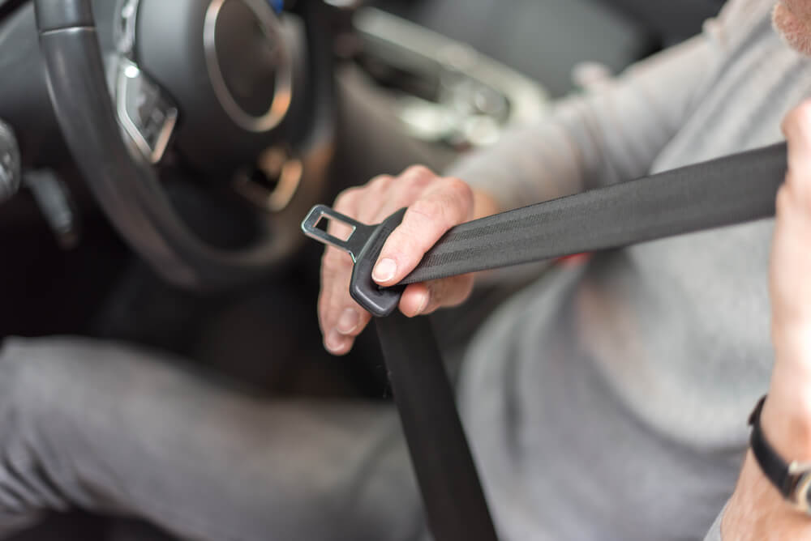

Explorando a vanguarda da tecnologia para prevenir acidentes de trânsito.
Quem Somos?
Somos uma empresa de tecnologia apaixonada por segurança viária e comprometida em tornar nossas estradas mais seguras para todos. Combinando inovação, visão computacional e engenharia de ponta, criamos o Sistema de Detecção Veicular que está revolucionando a forma como entendemos o comportamento dos motoristas.

Não é novidade que há um grande risco em acessar um aplicativo ou dar aquela
rolada em seu feed de notícias enquanto dirige, mas números divulgados recentemente comprovam quão
inseguras são essas ações. De acordo com a Associação Brasileira de Medicina de Tráfego (Abramet), o
uso de celular ao volante é a terceira maior causa de fatalidades no trânsito no Brasil. Nos Estados
Unidos, em 2016, 3.450 pessoas morreram em acidentes causados por distração. É o que mostram os
números da Administração Nacional de Segurança Viária (NHTSA). Ainda de acordo com a instituição, o
uso de celular aumenta em 400% o risco de sofrer um acidente de trânsito. Uma mensagem de texto pode
até parecer inofensiva no trânsito. Mas, um estudo feito pelo Centro de Experimentação e Segurança
Viária (Cesvi) apontou que desviar o olhar para responder uma mensagem no Whatsapp à velocidade de
80 km/h equivale a dirigir a extensão de um campo de futebol inteiro com os olhos fechados. Alguns
motoristas chegam a ficar até 4,5 segundos sem atentar ao trânsito enquanto interagem em alguma rede
social. Abrir o Facebook à velocidade de 50 km/h equivale a deixar o carro “dirigir sozinho” por uma
extensão a 12 veículos populares enfileirados.

Dados da Associação Brasileira de Medicina do Tráfego (Abramet), mostram que o uso de cinto de
segurança pode reduzir o risco de morte em 45% para pessoas no banco da frente e 75% para
passageiros no banco de trás dos veículos. A estatística considera tanto adultos quanto crianças que
utilizam as cadeirinhas, em vans, ônibus e qualquer outro meio de transporte.